1. Welcome Start here
1. Bienvenida Empezar aquí
The Ergos Agency App is the platform your travel agency uses every day to find rooms across multiple hotel chains, compare prices, book on behalf of your customers, and manage everything in one place. It replaces the patchwork of multiple GDS interfaces with a single tool that searches Dingus, Hotetec, Restel, and Roibos inventories at the same time.
La App de la Agencia de Ergos es la plataforma que su agencia de viajes usa cada día para encontrar habitaciones en múltiples cadenas hoteleras, comparar precios, reservar a nombre de sus clientes y administrar todo en un solo lugar. Reemplaza el conjunto de interfaces de varios GDS con una única herramienta que busca en los inventarios de Dingus, Hotetec, Restel y Roibos al mismo tiempo.
What you can do here
Qué puede hacer aquí
- Search rooms across multiple GDS inventories at once.
- Quote prices to your customer using the agency's own markup.
- Book a room with full guest details and payment capture.
- Manage your active and past bookings from one list.
- Modify or cancel bookings according to each property's policy.
- Download vouchers and invoices in PDF.
- See your earnings per booking and aggregated as P&L.
- Add team members so multiple employees can work from the same agency.
- Buscar habitaciones en múltiples inventarios GDS a la vez.
- Cotizar precios para su cliente usando el markup propio de la agencia.
- Reservar una habitación con los datos completos del huésped y captura de pago.
- Administrar sus reservas activas y pasadas desde una sola lista.
- Modificar o cancelar reservas según la política de cada propiedad.
- Descargar vouchers y facturas en PDF.
- Ver sus ganancias por reserva y agregadas como P&L.
- Agregar miembros del equipo para que varios empleados trabajen desde la misma agencia.
How the app is organized
Cómo está organizada la app
From the top navigation bar you'll always have access to: Home (where you start a new search), Bookings (your reservation list), and your Account menu (with profile, employees, P&L, language, and logout). Everything else flows from one of these three.
Desde la barra de navegación superior siempre tendrá acceso a: Inicio (donde inicia una búsqueda nueva), Reservas (su lista de reservas) y su menú de Cuenta (con perfil, empleados, P&L, idioma y cerrar sesión). Todo lo demás parte de una de estas tres.
2. Logging in & account setup
2. Ingresar y configurar la cuenta
First-time setup Configuración inicialIf your agency was invited by Ergos
Si su agencia fue invitada por Ergos
An Ergos representative sends an email to your agency owner with a registration link. Click the link, set your password, and you're in. The owner can later invite teammates from the User Management page (see §11).
Un representante de Ergos envía un correo al dueño de su agencia con un link de registro. Haga clic en el link, establezca su contraseña y listo. El dueño puede después invitar al equipo desde la página User Management (ver §11).
If you were invited by a teammate (employee invitation)
Si lo invitó un compañero (invitación a empleado)
You receive an email with a personal link. Open it, set your password, and you'll land directly inside the agency account.
Recibe un correo con un link personal. Ábralo, establezca su contraseña, y entrará directamente en la cuenta de la agencia.
Logging in (everyday use)
Ingresar (uso diario)
- Go to your agency's URL (your owner has it; usually something like
yourname.lukzen-op.com). - Enter your email address and password.
- If you have a passkey registered (fingerprint, FaceID, or a hardware key), click "Sign in with passkey" — faster and more secure than a password.
- You'll land on the Home page with the search panel ready.
- Vaya a la URL de su agencia (el dueño la tiene; usualmente algo como
tunombre.lukzen-op.com). - Ingrese su correo y contraseña.
- Si tiene un passkey registrado (huella digital, FaceID o una llave de hardware), haga clic en "Iniciar sesión con passkey" — más rápido y seguro que la contraseña.
- Llegará a la página de Inicio con el panel de búsqueda listo.
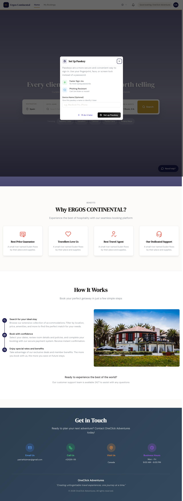
3. Finding the right hotel
3. Encontrar el hotel adecuado
From the Home page, the search panel lets you tell the system where the guest wants to stay, when, and how many rooms/guests they need.
Desde la página de Inicio, el panel de búsqueda le permite indicarle al sistema dónde quiere alojarse el huésped, cuándo y cuántas habitaciones/huéspedes necesita.
Building your search
Armar su búsqueda
- Destination: open the dropdown to choose from 193 countries drawn from the live hotel inventory — the same list used by Markup Rules country pickers — or type to search. Selecting "All Countries" searches the full catalog at once.
- Dates: pick a check-in and check-out date. The minimum stay is 1 night.
- Rooms & guests: click the rooms selector to add multiple rooms; for each room set adults + children + child ages.
- Click Search. Results stream in as each supplier responds (Restel and Roibos take ~14 round-trips per search and may take a few seconds longer than Dingus/Hotetec).
- Destino: abra el dropdown para elegir entre 193 países tomados del inventario hotelero en vivo — la misma lista que usan los selectores de país en Markup Rules — o escriba para buscar. Seleccionar "All Countries" busca en todo el catálogo a la vez.
- Fechas: elija una fecha de check-in y check-out. La estadía mínima es de 1 noche.
- Habitaciones y huéspedes: haga clic en el selector de habitaciones para agregar varias; para cada habitación indique adultos + niños + edades de los niños.
- Haga clic en Buscar. Los resultados van apareciendo a medida que cada proveedor responde (Restel y Roibos hacen ~14 round-trips por búsqueda y pueden tardar unos segundos más que Dingus/Hotetec).
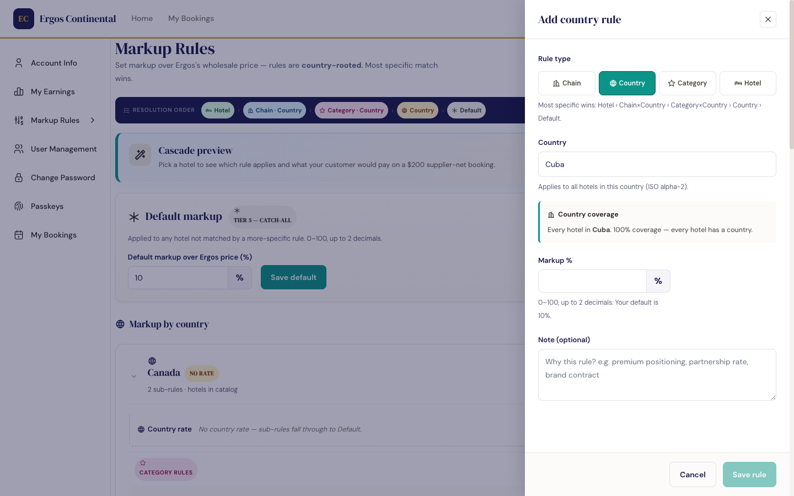
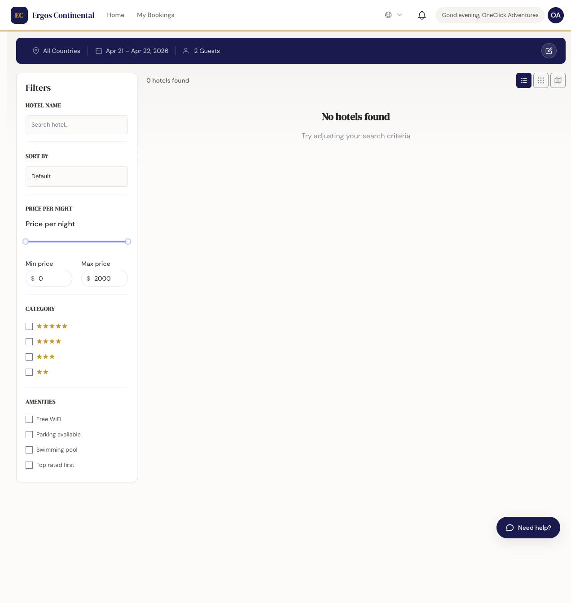
Filtering and sorting
Filtrar y ordenar
- Star rating — narrow to e.g. 4★ and 5★ only.
- Price range — set a min/max per night.
- Amenities — pool, all-inclusive, beachfront, parking, Wi-Fi, etc.
- Sort: price (lowest first / highest first), distance from center, or star rating.
- Calificación por estrellas — limite a, por ejemplo, solo 4★ y 5★.
- Rango de precio — establezca un mínimo/máximo por noche.
- Comodidades — piscina, all-inclusive, frente a la playa, estacionamiento, Wi-Fi, etc.
- Ordenar: precio (más bajo primero / más alto primero), distancia al centro, o calificación de estrellas.
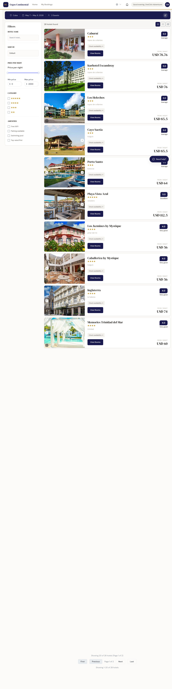
4. Reviewing a hotel & picking a room
4. Revisar un hotel y elegir habitación
Clicking a hotel card opens its detail page. You'll see photos, amenities, location, guest reviews when available, and — most important — the list of available room types with their per-night prices.
Al hacer clic en una tarjeta de hotel se abre su página de detalle. Verá fotos, comodidades, ubicación, reseñas de huéspedes cuando estén disponibles y — lo más importante — la lista de tipos de habitación disponibles con sus precios por noche.
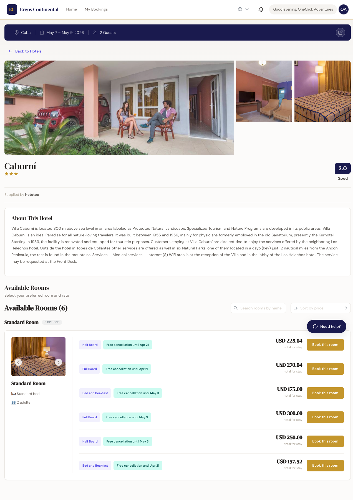
What to look at before booking
Qué mirar antes de reservar
- Board / régimen: All-Inclusive, Bed & Breakfast, Half Board, Room Only.
- Refundable vs non-refundable: non-refundable rates are cheaper but cannot be cancelled. Communicate this clearly to your customer.
- Cancellation policy: hover or tap the policy link — shows the cutoff date and the penalty.
- Total for stay: the price shown already includes the nightly rate × nights. Taxes and resort fees, when displayed by the supplier, are itemized.
- Régimen: All-Inclusive, Bed & Breakfast, Media Pensión, Solo Habitación.
- Reembolsable vs no reembolsable: las tarifas no reembolsables son más baratas pero no se pueden cancelar. Comuníquele esto claramente a su cliente.
- Política de cancelación: pase el mouse o toque el link de política — muestra la fecha límite y la penalización.
- Total de la estadía: el precio mostrado ya incluye la tarifa por noche × cantidad de noches. Los impuestos y los cargos del resort, cuando los muestra el proveedor, aparecen desglosados.
5. Making a booking
5. Hacer una reserva
Once you pick a room and click Book, the system walks you through three short steps: guest info, payment, and confirmation. The whole flow normally takes under 2 minutes.
Una vez que elige una habitación y hace clic en Reservar, el sistema lo guía por tres pasos cortos: datos del huésped, pago y confirmación. El flujo completo normalmente lleva menos de 2 minutos.
The 3-step booking flow
El flujo de reserva en 3 pasos
- Guest details: name(s) of every guest, primary contact email and phone. If multiple rooms, you assign guests to rooms here.
- Payment: capture the customer's payment method — credit/debit card or, in supported regions, Tropipay. Your agency markup is added automatically.
- Confirmation: a confirmation screen with the locator (booking ID), the hotel's confirmation code (when the supplier returns one immediately), and a link to download the voucher.
- Datos del huésped: nombre(s) de cada huésped, correo y teléfono de contacto principal. Si son varias habitaciones, aquí asigna los huéspedes a cada habitación.
- Pago: captura el método de pago del cliente — tarjeta de crédito/débito o, en regiones compatibles, Tropipay. El markup de su agencia se agrega automáticamente.
- Confirmación: una pantalla de confirmación con el locator (ID de reserva), el código de confirmación del hotel (cuando el proveedor lo devuelve en el momento) y un link para descargar el voucher.
Multi-room bookings
Reservas multi-habitación
If your search had more than one room, the guest-info step expands into one block per room. Assign the lead guest of each room — they appear on the voucher per-room. Children's names are also required by most suppliers.
Si su búsqueda tenía más de una habitación, el paso de datos del huésped se expande en un bloque por habitación. Asigne al huésped principal de cada habitación — aparecen en el voucher por habitación. La mayoría de los proveedores también requiere los nombres de los niños.
If a booking fails partway through
Si una reserva falla a mitad de camino
Occasionally a supplier rejects the booking at the last second (e.g. the room sold out in the seconds since search). When that happens, your card is not charged and you'll see a clear error message with the option to pick a different room or retry. Always confirm the customer's email confirmation arrived before considering the booking final.
A veces un proveedor rechaza la reserva en el último segundo (ej. la habitación se agotó en los segundos transcurridos desde la búsqueda). Cuando eso ocurre, no se cobra la tarjeta y verá un mensaje de error claro con la opción de elegir otra habitación o reintentar. Confirme siempre que el correo de confirmación llegó al cliente antes de considerar la reserva como final.
6. Adding an airport transfer New
6. Agregar un traslado al aeropuerto Nuevo
You can add a private airport transfer to any booking — powered by Mozio, a global network of ground-transport providers. The same search-and-book flow appears in three places, so you (or your client) can add a transfer at whichever moment suits the trip.
Puede agregarle un traslado al aeropuerto privado a cualquier reserva — con Mozio, una red global de proveedores de transporte terrestre. El mismo flujo de búsqueda y reserva aparece en tres lugares, así que usted (o su cliente) puede agregar un traslado en el momento que mejor le convenga al viaje.
- During the booking — when offered, an Enhance your trip step appears right after guest details. The transfer is still booked separately from the room (see payment note below).
- On the confirmation screen — right after the room is booked, an Additional services card offers a transfer with one click.
- On a confirmed booking, later — open the booking's detail page and use the Airport Transfer section (+ Add Airport Transfer) any time before travel.
- Durante la reserva — cuando está disponible, aparece un paso Mejore su viaje justo después de los datos del huésped. El traslado igual se reserva por separado de la habitación (ver la nota de pago más abajo).
- En la pantalla de confirmación — apenas se reserva la habitación, una tarjeta de Servicios adicionales ofrece el traslado con un clic.
- En una reserva ya confirmada, más tarde — abra la página de detalle de la reserva y use la sección Traslado al Aeropuerto (+ Agregar traslado al aeropuerto) en cualquier momento antes del viaje.
Starting a transfer search
Iniciar una búsqueda de traslado
Whichever entry point you use, you open the Airport Transfer section and start a search. On a confirmed booking, click + Add Airport Transfer; during the booking flow the card is already on the Enhance your trip step.
Sea cual sea el punto de entrada, abre la sección Traslado al Aeropuerto e inicia una búsqueda. En una reserva confirmada, haga clic en + Agregar traslado al aeropuerto; durante el flujo de reserva la tarjeta ya está en el paso Mejore su viaje.
Fill the search form: the pickup (usually the arrival airport), the dropoff, the date and time, the number of passengers, and whether it's one way or round trip. To save time, the app auto-fills the dropoff with the hotel (when its address is known), the date with the check-in date, and the passenger count from the room occupancy — you can change any of them. Choosing round trip reveals an extra return date and time. The date and time must be in the future. Then click Search Vehicles.
Complete el formulario: el punto de recogida (normalmente el aeropuerto de llegada), el destino, la fecha y hora, la cantidad de pasajeros, y si es solo ida o ida y vuelta. Para ahorrar tiempo, la app autocompleta el destino con el hotel (cuando se conoce su dirección), la fecha con el check-in y la cantidad de pasajeros según la ocupación de la habitación — puede cambiar cualquiera de estos datos. Al elegir ida y vuelta aparece una fecha y hora de regreso. La fecha y hora deben ser futuras. Después haga clic en Buscar vehículos.
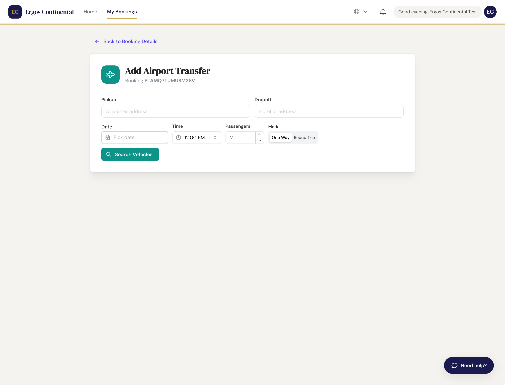
Choosing a vehicle
Elegir un vehículo
Results stream in as providers respond — you'll see a count like "6 options found · searching for more…" that settles once every provider has answered, so the cheapest option may not be the first to appear. Each card shows the provider, the vehicle class, the maximum passengers and bags, the included amenities (Wi-Fi, meet & greet, flight tracking…), the cancellation policy, and the price — the client price already includes your agency markup. Some vehicles offer paid extras (e.g. a child seat) you can tick before selecting. Sort or filter at the top, then click Select on the option you want.
Los resultados van llegando a medida que responden los proveedores — verá un contador como "6 opciones encontradas · buscando más…" que se estabiliza cuando todos respondieron, así que la opción más barata puede no ser la primera en aparecer. Cada tarjeta muestra el proveedor, la clase del vehículo, el máximo de pasajeros y maletas, las comodidades incluidas (Wi-Fi, meet & greet, seguimiento de vuelo…), la política de cancelación y el precio — el precio al cliente ya incluye el markup de su agencia. Algunos vehículos ofrecen extras pagos (ej. silla para niños) que puede marcar antes de seleccionar. Ordene o filtre arriba, y luego haga clic en Seleccionar en la opción que desee.
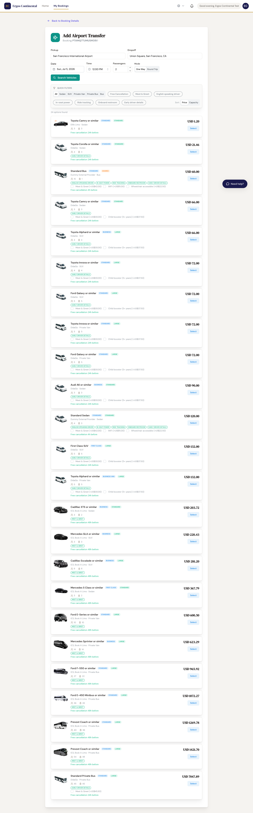
Confirming the transfer
Confirmar el traslado
The selected vehicle is highlighted and a confirm bar shows the total. Click Book Transfer to confirm. The transfer is attached to the booking with a Mozio confirmation number and the driver pickup instructions (e.g. "your driver will meet you in the arrivals hall holding a name sign") — both appear on the confirmation screen and on the booking's voucher and invoice.
El vehículo seleccionado queda resaltado y una barra de confirmación muestra el total. Haga clic en Reservar traslado para confirmar. El traslado queda asociado a la reserva con un número de confirmación de Mozio y las instrucciones de encuentro con el conductor (ej. "su conductor lo esperará en la zona de llegadas con un cartel con su nombre") — ambos aparecen en la pantalla de confirmación y en el voucher y la factura de la reserva.
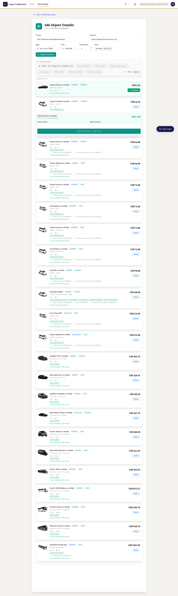
Managing a transfer afterwards
Gestionar un traslado después
Every transfer attached to a booking shows up in the Airport Transfer section of the booking detail page with a status badge:
Cada traslado asociado a una reserva aparece en la sección Traslado al Aeropuerto de la página de detalle, con una etiqueta de estado:
- Confirmed — booked and ready; the confirmation number and driver instructions are available.
- Pending — the provider hasn't finalised yet; it usually settles on its own.
- Failed — the transfer couldn't be booked. Your room booking is not affected — use Retry Booking to try again.
- Cancelled — the transfer was cancelled; it no longer counts toward the booking total.
- Confirmado — reservado y listo; están disponibles el número de confirmación y las instrucciones del conductor.
- Pendiente — el proveedor todavía no finalizó; normalmente se resuelve solo.
- Falló — no se pudo reservar el traslado. Su reserva de habitación no se ve afectada — use Reintentar reserva para volver a intentar.
- Cancelado — el traslado fue cancelado; ya no cuenta para el total de la reserva.
From a confirmed transfer you can Modify it (change date, time, passengers) or Cancel Transfer. Cancelling asks for confirmation; once cancelled, the row moves into a Show cancelled list so your history stays clean. You can also add a second transfer (for example the return trip) with + Add Another Transfer.
Desde un traslado confirmado puede Modificarlo (cambiar fecha, hora, pasajeros) o Cancelar traslado. Cancelar pide confirmación; una vez cancelado, la fila pasa a una lista Ver cancelados para mantener limpio el historial. También puede agregar un segundo traslado (por ejemplo el regreso) con + Agregar otro traslado.
7. Managing your bookings
7. Administrar sus reservas
The Bookings page lists every reservation your agency has made. Use it to look up a customer, check status, download paperwork, or initiate a modification or cancellation.
La página Reservas lista cada reserva que hizo su agencia. Úsela para buscar un cliente, revisar el estado, descargar la documentación o iniciar una modificación o cancelación.
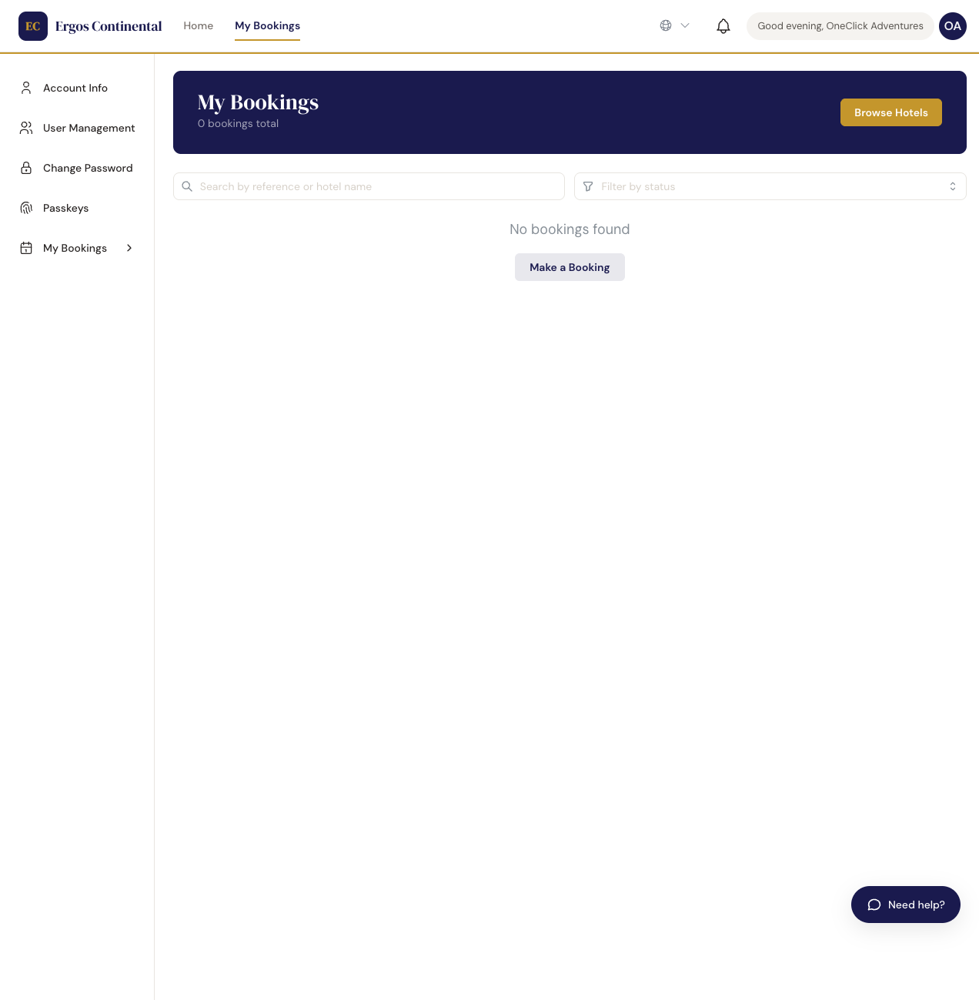
Booking status — what each label means
Estado de reserva — qué significa cada etiqueta
| Status | Estado | Meaning | Significado |
|---|---|---|---|
| Pending / Pendiente | Sent to the supplier; awaiting their confirmation. Usually settles within minutes.Enviada al proveedor; esperando su confirmación. Usualmente se confirma en minutos. | ||
| Confirmed / Confirmada | The supplier returned a confirmation code. The booking is firm.El proveedor devolvió un código de confirmación. La reserva está firme. | ||
| Cancelled / Cancelada | Cancelled by your agency or by the supplier (sold out, refused). Penalty, if any, is shown.Cancelada por su agencia o por el proveedor (agotada, rechazada). La penalización, si la hay, se muestra. | ||
| Completed / Completada | The stay finished. Voucher and invoice are still downloadable.La estadía terminó. El voucher y la factura siguen disponibles para descarga. |
Finding a specific booking quickly
Encontrar una reserva específica rápidamente
Use the search box at the top of the list. You can search by locator, customer name, hotel name, or email. The filters on the right narrow by date range and status.
Use el cuadro de búsqueda en la parte superior de la lista. Puede buscar por locator, nombre del cliente, nombre del hotel o correo. Los filtros a la derecha limitan por rango de fechas y estado.
Modifying or cancelling
Modificar o cancelar
Click the booking row to open its detail page. The Modify and Cancel actions appear in the header — both are gated by the supplier's policy (modifications are not supported by all chains, and cancellation may incur a penalty depending on how close to the check-in date you are). The system always tells you the consequence before you confirm.
Haga clic en la fila de la reserva para abrir su página de detalle. Las acciones Modificar y Cancelar aparecen en el encabezado — ambas están sujetas a la política del proveedor (no todas las cadenas admiten modificaciones, y la cancelación puede tener una penalización según qué tan cerca del check-in se encuentre). El sistema siempre le indica la consecuencia antes de que confirme.
8. Vouchers & invoices
8. Vouchers y facturas
Every confirmed booking produces two documents:
Cada reserva confirmada produce dos documentos:
- Voucher (Bono): the customer-facing document that proves the reservation. Hand it to the customer; they present it at the hotel.
- Invoice (Factura): the agency-facing document — what your agency owes Ergos for this booking, broken down by line item.
- Voucher (Bono): el documento para el cliente que prueba la reserva. Entrégueselo al cliente; lo presenta en el hotel.
- Invoice (Factura): el documento para la agencia — lo que su agencia le debe a Ergos por esta reserva, desglosado por línea.
Downloading them
Descargarlos
From any confirmed booking's detail page, click Download Voucher or Download Invoice. Both render as PDF and open in a new tab; you can save or email them directly from your browser. Both documents are available indefinitely after the booking is created — you can re-download for completed stays years later.
Desde la página de detalle de cualquier reserva confirmada, haga clic en Descargar Voucher o Descargar Factura. Ambos se generan como PDF y se abren en una pestaña nueva; puede guardarlos o enviarlos por correo directamente desde su navegador. Ambos documentos están disponibles indefinidamente después de crear la reserva — puede volver a descargarlos para estadías completadas años después.
9. Setting your markup (pricing rules) New
9. Configurar su markup (reglas de precio) Nuevo
Agency owner only Solo dueño de la agenciaThe Markup Rules page (Account menu → Markup Rules, or go directly to /markup-rules) is where you decide how much your agency adds on top of the Ergos sell price. Every price the customer sees flows through these rules — you never have to price a hotel one by one.
La página de Markup Rules (menú de Cuenta → Markup Rules, o vaya directo a /markup-rules) es donde decide cuánto agrega su agencia por encima del precio de venta de Ergos (Ergos sell). Cada precio que ve el cliente pasa por estas reglas — nunca tiene que fijar el precio de un hotel uno por uno.
The big idea: a Default plus a few broad rules
La idea central: un Default más unas pocas reglas amplias
The catalog has over 100,000 hotels. Instead of pricing each one individually, you set a Default markup that covers everything, then add targeted rules for the chains, countries, star ratings, or specific hotels where you want a different margin. Most agencies operate with fewer than ten rules in total.
El catálogo tiene más de 100.000 hoteles. En vez de fijar el precio de cada uno, establece un markup Default (la regla general) que cubre todo, y después agrega reglas específicas para las cadenas, países, calificaciones de estrellas u hoteles concretos donde desea un margen distinto. La mayoría de las agencias operan con menos de diez reglas en total.
Default markup
Markup Default
The Default is the baseline percentage applied to any hotel that has no more-specific rule. It is a whole-percent integer — enter 15 to mean 15%, not 0.15. The Default starts at 0, so until you set it your customers pay exactly the Ergos sell price. Set it once; it covers the entire catalog automatically.
El Default es el porcentaje base que se aplica a cualquier hotel que no tenga una regla más específica. Es un número entero de porcentaje — ingrese 15 para indicar 15%, no 0.15. El Default comienza en 0, así que hasta que lo configure, sus clientes pagan exactamente el precio de venta de Ergos. Configúrelo una vez; cubre todo el catálogo automáticamente.
The 5-tier cascade: most specific rule wins
La cascada de 5 niveles: gana la regla más específica
When the app prices a hotel it checks your rules in this order and stops at the first match:
Cuando la app fija el precio de un hotel, revisa sus reglas en este orden y se detiene en la primera que coincide:
- Per-hotel — an explicit rule for that exact property.
- Chain × Country — a rule for a brand group in a specific country (e.g., Meliá in Cuba). Meliá in Cuba and Meliá in Spain are separate rules.
- Category × Country — a rule for all 5★, 4★, or 3★ hotels in a specific country (e.g., 5★ in Cuba).
- Country — a rule for all hotels in a specific country.
- Default — the baseline, when nothing else matched.
- Por hotel — una regla explícita para esa propiedad exacta.
- Cadena × País — una regla para un grupo de marca en un país específico (ej. Meliá en Cuba). Meliá en Cuba y Meliá en España son reglas separadas.
- Categoría × País — una regla para todos los hoteles de 5★, 4★ o 3★ en un país específico (ej. 5★ en Cuba).
- País — una regla para todos los hoteles de un país específico.
- Default — la regla general de último nivel, cuando nada más coincidió.
How your markup becomes the customer's price
Cómo su markup se convierte en el precio del cliente
Your markup is applied on top of the Ergos sell price — the price Ergos already lists to you after its own commission and any hotel-chain discount. You never touch the supplier cost; you only decide your margin. Here is the same booking Ergos documents in its Booking Breakdown (reference FIN-S3-BOTH), from your side:
Su markup se aplica sobre el precio de venta de Ergos (Ergos sell) — el precio que Ergos ya le lista después de su propia comisión y de cualquier descuento de cadena hotelera. Nunca toca el costo del proveedor; solo decide su margen. Esta es la misma reserva que Ergos documenta en su Booking Breakdown (referencia FIN-S3-BOTH), desde su lado:
| Line | Línea | USD |
|---|---|---|
| Ergos sell (what you pay Ergos) | Venta Ergos (lo que le paga a Ergos) | $800.00 |
| + your markup (12.5%) | + su markup (12,5%) | +$100.00 |
| = Customer pays | = El cliente paga | $900.00 |
| Your markup income | Tu ingreso por markup | $100.00 |
| + Ergos rebate (3%, cashback to you) | + Rebate de Ergos (3%, reembolso para usted) | $24.00 |
| = Your total profit on this booking | = Tu ganancia total en esta reserva | $124.00 |

Adding a rule
Agregar una regla
Each tier has a + button on the Markup Rules page. Click it and a drawer opens on the right:
Cada nivel tiene un botón + en la página de Markup Rules. Haga clic y se abre un panel a la derecha:
To add any rule
Para agregar cualquier regla
- Use + Add rule (top), a country card's + Chain / + Category, or + Add country for a new country rate.
- Pick the rule type. Chain and Category rules also need a country — choose it before the chain or star rating. (Country and per-hotel rules don't.)
- Enter the markup percentage as a whole number (0–200). For example, type
12for 12%. - Click Save rule. The rule appears in the tier list immediately and applies to all future availability queries.
- To discard without saving, click Cancel or press Escape.
- Use + Add rule (arriba), el + Chain / + Category de una tarjeta de país, o + Add country para una nueva tarifa de país.
- Elija el tipo de regla. Las reglas de Cadena y Categoría también necesitan un país — elíjalo antes de la cadena o la calificación de estrellas. (Las de País y por hotel no.)
- Ingrese el porcentaje de markup como número entero (0–200). Por ejemplo, escriba
12para 12%. - Haga clic en Save rule. La regla aparece en la lista del nivel al instante y se aplica a todas las consultas de disponibilidad futuras.
- Para descartar sin guardar, haga clic en Cancel o presione Escape.

Finding a hotel for a per-hotel rule
Encontrar un hotel para una regla por hotel
Because the catalog is large, the hotel picker lets you narrow before you scroll. Use any combination of:
Como el catálogo es grande, el selector de hoteles le permite acotar antes de desplazarse. Use cualquier combinación de:
- Country — limits the list to one country.
- City — narrows further to a single city (appears once you pick a country).
- Star rating — shows only 3★, 4★, or 5★ properties.
- Name search — type part of the hotel name; works independently without the other filters if you already know what you're looking for.
- País — limita la lista a un país.
- Ciudad — acota todavía más a una ciudad (aparece cuando elige un país).
- Calificación de estrellas — muestra solo propiedades de 3★, 4★ o 5★.
- Búsqueda por nombre — escriba parte del nombre del hotel; funciona por sí sola, sin los otros filtros, si ya sabe lo que busca.
As you filter, a list appears in alphabetical order, with each hotel's city and star rating shown beside its name. The picker shows the first matches only — if you don't see the property, type more of its name to narrow the list. When you open the picker from a country card (its + Hotel button), that country is already locked in for you. Click the hotel you want to attach the rule to, set the markup %, and save.
A medida que filtra, aparece una lista en orden alfabético, con la ciudad y la calificación de estrellas de cada hotel junto a su nombre. El selector muestra solo las primeras coincidencias: si no ve la propiedad, escriba más de su nombre para acotar la lista. Cuando abre el selector desde la tarjeta de un país (su botón + Hotel), ese país ya queda fijado por usted. Haga clic en el hotel al que desea asociar la regla, establezca el % de markup y guarde.
Category rules and star ratings
Reglas de categoría y calificación de estrellas
In the current version, the Category tier maps directly to star rating — you create rules for 5★, 4★, or 3★ hotels within a country. A 5★ rule in Cuba applies only to five-star hotels in Cuba; 5★ in Spain is a separate rule. A category rule is beaten only by a more specific per-hotel or chain rule for that property. Richer style categories (all-inclusive, boutique, resort) may be added in a future release.
En la versión actual, el nivel Categoría corresponde directamente a la calificación de estrellas — crea reglas para hoteles de 5★, 4★ o 3★ dentro de un país. Una regla de 5★ en Cuba aplica solo a los hoteles de cinco estrellas en Cuba; 5★ en España es una regla separada. Una regla de categoría solo es superada por una regla por hotel o de cadena más específica para esa propiedad. En una versión futura podrían agregarse categorías de estilo más detalladas (all-inclusive, boutique, resort).
Rules are organised by country cards
Las reglas se organizan en tarjetas de país
The Markup Rules page groups your rules into country cards: one card per country, each holding that country's rate plus its category (star) and chain rules. Chain and category rules are country-scoped — a Meliá rule in Cuba is a different rule from Meliá in Spain, so you can price the same brand differently per market. Only per-hotel overrides (in their own card) and the Default are global. Use + Add country to start a new country, and a card's + Chain / + Category to add a rule with that country pre-filled.
La página de Markup Rules agrupa sus reglas en tarjetas de país: una tarjeta por país, cada una con la tarifa de ese país más sus reglas de categoría (estrellas) y de cadena. Las reglas de cadena y categoría están limitadas por país — una regla de Meliá en Cuba es distinta de Meliá en España, así que puede fijar precios diferentes a la misma marca por mercado. Solo los ajustes por hotel (en su propia tarjeta) y el Default son globales. Use + Add country para empezar un país nuevo, y el + Chain / + Category de una tarjeta para agregar una regla con ese país ya seleccionado.
Cascade preview
Vista previa de la cascada
Before relying on your rule set for real bookings, use the cascade preview at the top of the Markup Rules page. Pick any hotel and the preview walks the full 5-tier resolution — checking each tier in order, marking misses with ✗ and the winner with ✓ — then shows the Ergos net, your markup percentage, and the customer-facing price.
Antes de confiar en su conjunto de reglas para reservas reales, use la vista previa de la cascada en la parte superior de la página de Markup Rules. Elija cualquier hotel y la vista previa recorre la resolución completa de 5 niveles — comprobando cada nivel en orden, marcando los que no coinciden con ✗ y el ganador con ✓ — y luego muestra el neto del proveedor de Ergos, su porcentaje de markup y el precio al cliente.
Worked example — Cuba country rule
Ejemplo práctico — regla de país Cuba
An agency sets a 15% Cuba country rule. When they pick any Cuba hotel in the cascade preview — say, Meliá Varadero (5★) — the preview shows the full resolution walk and the resulting price:
Una agencia configura una regla de país Cuba al 15%. Cuando elige cualquier hotel de Cuba en la vista previa — por ejemplo, Meliá Varadero (5★) — la vista previa muestra el recorrido completo de resolución y el precio resultante:

10. Tracking your earnings (P&L) Updated — B1
10. Seguir sus ganancias (P&L) Actualizado — B1
The P&L page (accessed from your account menu, or directly at /pnl) shows you what your agency earned over any booking month you choose. Earnings group by booking date — the date the reservation was made — not by check-in date.
La página de P&L (accesible desde el menú de cuenta, o directo en /pnl) le muestra lo que ganó su agencia en cualquier mes de reserva que elija. Las ganancias se agrupan por fecha de reserva — la fecha en que se hizo la reserva — no por fecha de check-in.
The six summary cards
Las seis tarjetas de resumen
At the top of the dashboard, six stat cards give you an instant read of the selected booking month:
En la parte superior del dashboard, seis tarjetas de resumen le dan una lectura instantánea del mes de reserva seleccionado:
- Total Profit — your net earnings for the month: markup income plus rebate income.
- Markup Income — the difference between what your customers paid and what your agency paid Ergos. You set this markup; you keep 100% of it.
- Rebate Income — the cashback Ergos pays your agency on every booking. The percentage is set in your contract (typical: 4% of Ergos sell). Settled monthly.
- Customer Paid — the total your customers paid across all bookings in the month. This is the gross revenue your agency collected.
- Ergos Cost — what your agency paid Ergos for those bookings (net supplier cost before markup). Total Profit = Customer Paid − Ergos Cost + Rebate.
- Bookings — the count of bookings (including cancelled ones) in the selected month.
- Ganancia Total — sus ganancias netas del mes: ingreso por markup más ingreso por rebate.
- Ingreso por Markup — la diferencia entre lo que pagaron sus clientes y lo que su agencia le pagó a Ergos. Usted fija este markup; se queda con el 100%.
- Ingreso por Rebate — el reembolso que Ergos le paga a su agencia en cada reserva. El porcentaje está fijado en su contrato (típico: 4% del precio de venta de Ergos). Se liquida mensualmente.
- Cobrado al Cliente — el total que pagaron sus clientes en todas las reservas del mes. Es el ingreso bruto que recaudó su agencia.
- Costo Ergos — lo que su agencia le pagó a Ergos por esas reservas (costo neto del proveedor antes del markup). Ganancia Total = Cobrado al Cliente − Costo Ergos + Rebate.
- Reservas — la cantidad de reservas (incluyendo las canceladas) en el mes seleccionado.
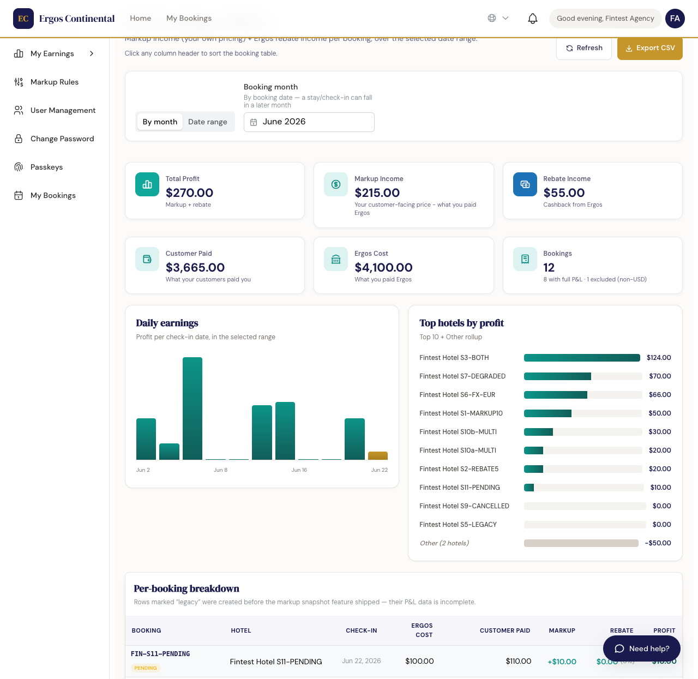
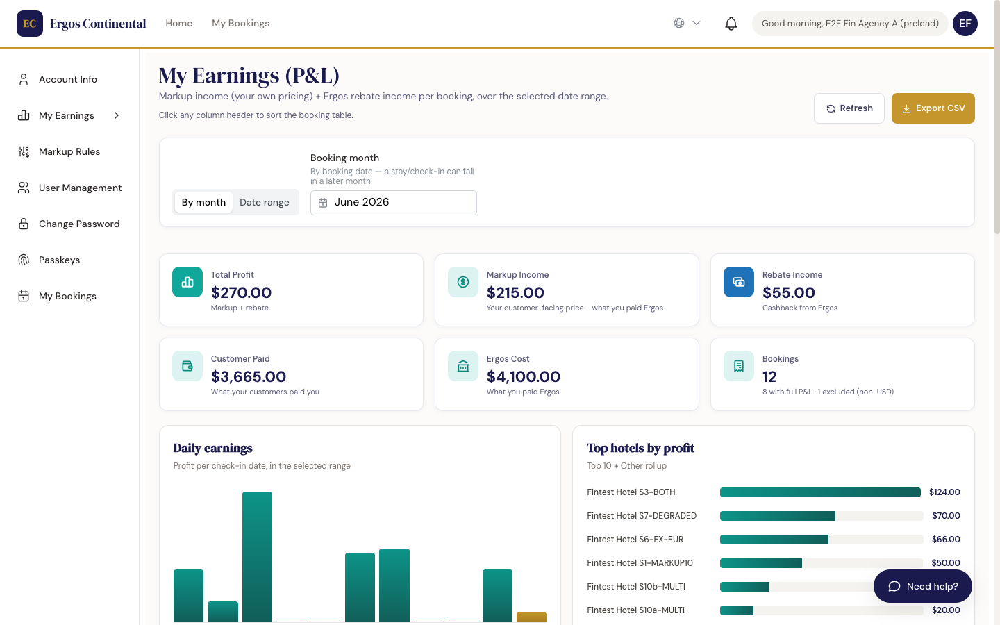
Clickable income cards — drill into contributing bookings
Tarjetas de ingreso con clic — desglosar las reservas que contribuyen
The three income cards — Total Profit, Markup Income, and Rebate Income — are clickable. Clicking one filters the booking table below to show only the rows that contributed to that figure. A caption appears above the table confirming the active filter, for example:
En las tres tarjetas de ingreso — Ganancia Total, Ingreso por Markup e Ingreso por Rebate — se puede hacer clic. Al hacer clic en una, la tabla de reservas de abajo se filtra para mostrar solo las filas que contribuyeron a ese número. Aparece un subtítulo encima de la tabla confirmando el filtro activo, por ejemplo:
Showing 3 of 4 bookings contributing to markup income — click the card again to clear
Mostrando 3 de 4 reservas que contribuyen al ingreso por markup — haga clic en la tarjeta de nuevo para limpiar
Click the same card again to clear the filter and return to the full table. Navigating away or reloading the page also clears the filter.
Haga clic en la misma tarjeta de nuevo para limpiar el filtro y volver a la tabla completa. Navegar a otra página o recargar la página también limpia el filtro.
Reading the P&L table
Leer la tabla de P&L
Each row is one booking. Click any column header to sort — locator, hotel, dates, every financial column. Sort applies across the entire selected month, not just the visible page.
Cada fila es una reserva. Haga clic en cualquier encabezado de columna para ordenar — locator, hotel, fechas, cada columna financiera. El ordenamiento se aplica a todo el mes seleccionado, no solo a la página visible.
Cancelled bookings stay visible in the table but show $0.00 income — their markup and rebate are reversed to zero so P&L totals reconcile exactly with your monthly remittance. Bookings imported from a legacy system before income tracking was enabled show a dash (—) in the income columns.
Las reservas canceladas permanecen visibles en la tabla pero muestran ingresos de $0,00 — su markup y rebate se revierten a cero para que los totales del P&L coincidan exactamente con su remesa mensual. Las reservas importadas de un sistema anterior, antes de que se habilitara el seguimiento de ingresos, muestran un guión (—) en las columnas de ingresos.
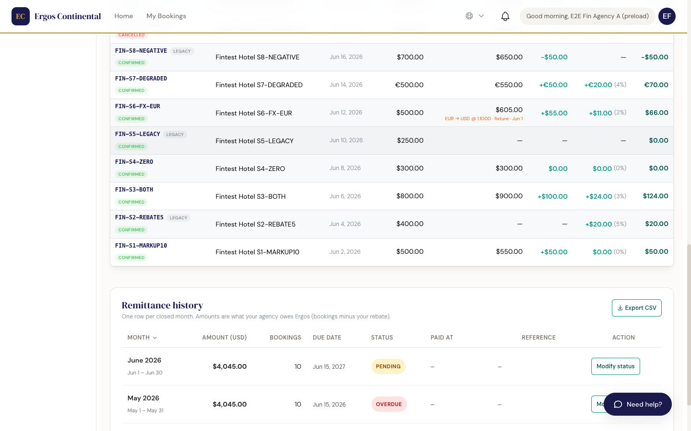
10b. My Earnings & remittances New — B2.1
10b. My Earnings & remesas Nuevo — B2.1
Agency owner only Solo dueño de la agenciaThe My Earnings page is a dedicated view for agency owners that combines your full P&L with remittance tracking — the monthly amounts you owe Ergos for the rebate they've already paid out on your behalf. Find it in the account sidebar, listed as My Earnings (P&L), above Markup Rules.
La página My Earnings (Mis Ganancias) es una vista exclusiva para dueños de agencia que combina su P&L completo con el seguimiento de remesas — los montos mensuales que le debe a Ergos por el rebate que ya le pagaron por adelantado. La encontrará en la barra lateral de la cuenta, listada como My Earnings (P&L), encima de Markup Rules.
The remittance banner
El banner de remesas
At the top of the page, an amber card shows the amount due for the most recently closed calendar month: "Remit USD X to Ergos by [date]". Below the headline you'll see which period it covers and a link to scroll directly to the history table. The banner carries a status pill:
En la parte superior de la página, una tarjeta ámbar muestra el monto adeudado por el mes calendario cerrado más recientemente: "Remit USD X to Ergos by [fecha]". Debajo del título ve el período que cubre y un link para desplazarse directo a la tabla de historial. El banner lleva una pastilla de estado:
- Pending (amber) — payment not yet registered.
- Overdue (red) — the due date has passed and no payment has been recorded.
- Pendiente (ámbar) — pago aún no registrado.
- Vencido (rojo) — la fecha de vencimiento pasó y no se registró ningún pago.
The banner disappears automatically once the remittance is marked paid, or when the amount owed is $0 (e.g., a month with no non-cancelled bookings).
El banner desaparece automáticamente una vez que la remesa se marca como pagada, o cuando el monto adeudado es $0 (por ejemplo, un mes sin reservas no canceladas).
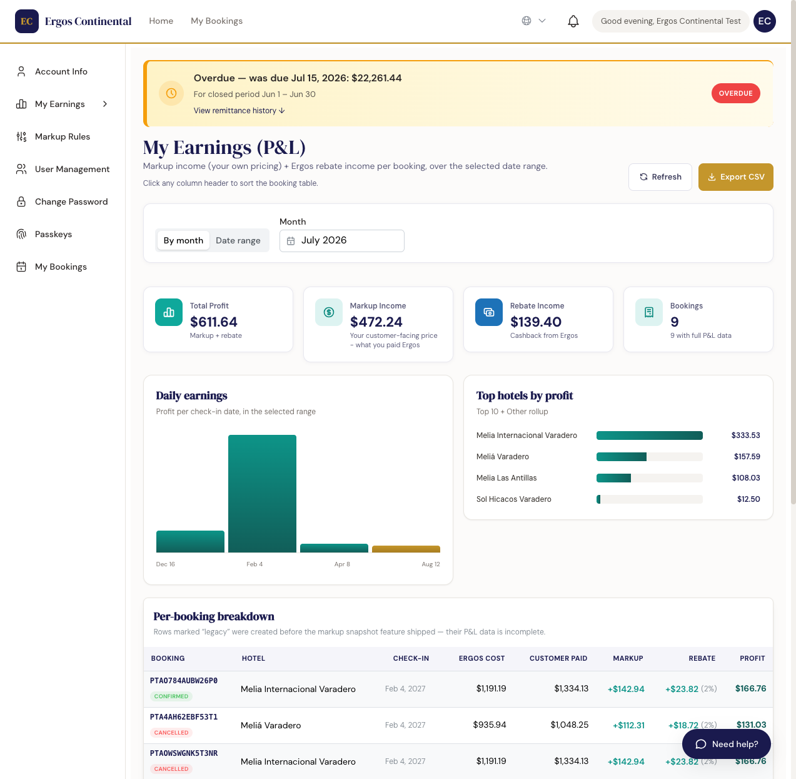
Date filter: By month vs. Date range
Filtro de fecha: Por mes vs. Rango de fechas
A two-button toggle above the stat tiles lets you switch how you slice the data:
Un toggle de dos botones sobre los tiles de KPI le permite cambiar cómo analiza los datos:
- By month (default) — selects a whole calendar month. The picker defaults to the current month and snaps automatically to the first and last day of whichever month you choose.
- Date range — lets you pick a custom From / To date, useful when you need to compare a partial month or a cross-month window.
- Por mes (predeterminado) — selecciona un mes calendario completo. El selector apunta al mes actual por defecto y se ajusta automáticamente al primer y último día del mes que elija.
- Rango de fechas — le permite elegir un rango Desde / Hasta personalizado, útil para comparar un mes parcial o una ventana que cruza meses.
Charts
Gráficos
- Daily earnings — a teal bar chart showing profit per check-in date across the selected period. Hover over any bar to see the exact USD amount; the most recent bar is highlighted in gold.
- Top hotels by profit — a horizontal bar chart showing your top 10 hotels by profit for the period, plus an Other rollup for the rest of the catalog.
- Ganancias diarias — un gráfico de barras teal que muestra la ganancia por fecha de check-in en el período seleccionado. Pase el mouse sobre cualquier barra para ver el monto exacto en USD; la barra más reciente se resalta en dorado.
- Top hoteles por ganancia — un gráfico de barras horizontal con sus 10 mejores hoteles por ganancia en el período, más un agrupador Otros para el resto del catálogo.
Remittance history table
Tabla de historial de remesas
Scroll past the booking breakdown to find the Remittance history table. It shows one row per closed calendar month with the following columns:
Desplácese más allá del desglose de reservas para encontrar la tabla de Historial de remesas. Muestra una fila por mes calendario cerrado con las siguientes columnas:
- Month — the month name plus a sub-label with the exact period (e.g., "Jun 1 – Jun 30").
- Amount (USD) — what your agency owes Ergos for that month.
- Bookings — how many non-cancelled bookings contributed to the amount.
- Due date — the 15th of the following month (e.g., a June remittance is due July 15). Ergos can configure a different day per agency in the future.
- Status — Pending, Paid, or Overdue (overdue is derived automatically when the due date passes without a paid record).
- Paid at — timestamp when payment was registered.
- Reference — the wire transfer ID recorded at the time of payment.
- Action — a Modify status button on every row (see below).
- Mes — el nombre del mes más una sub-etiqueta con el período exacto (ej. "Jun 1 – Jun 30").
- Monto (USD) — lo que su agencia le debe a Ergos por ese mes.
- Reservas — cuántas reservas no canceladas contribuyeron al monto.
- Fecha de vencimiento — el día 15 del mes siguiente (ej., una remesa de junio vence el 15 de julio). Ergos puede configurar un día distinto por agencia en el futuro.
- Estado — Pendiente, Pagado o Vencido (vencido se deriva automáticamente cuando pasa la fecha de vencimiento sin un registro de pago).
- Pagado el — marca de tiempo cuando se registró el pago.
- Referencia — el ID de la transferencia bancaria registrado al momento del pago.
- Acción — un botón Modificar estado en cada fila (ver más abajo).
Click any column header to sort the table. The Export CSV button (top right of the history card) downloads the full remittance history as a spreadsheet.
Haga clic en cualquier encabezado de columna para ordenar la tabla. El botón Exportar CSV (arriba a la derecha de la tarjeta de historial) descarga el historial completo de remesas como una hoja de cálculo.
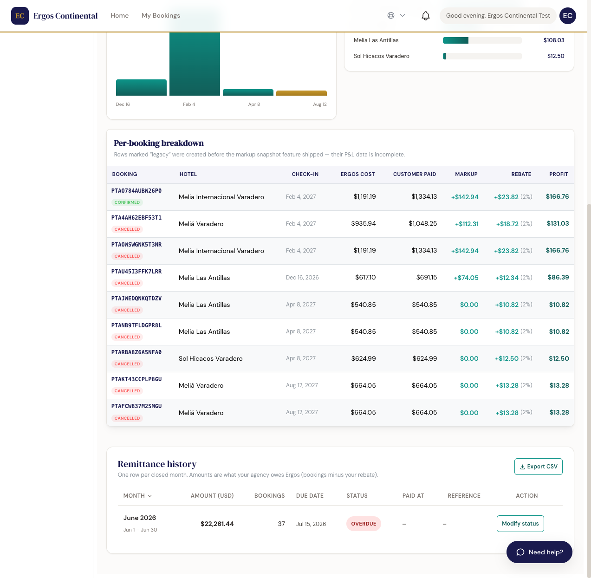
How amounts are calculated
Cómo se calculan los montos
The amount owed each month equals the total rebate earned on non-cancelled bookings that month, minus any rebate adjustment in your agency's contract. In plain terms: Ergos pre-pays your rebate each time a booking is confirmed, and the remittance is how you settle that balance monthly. Cancelled bookings are excluded — their rebate is reversed before the remittance is calculated.
El monto adeudado cada mes equivale al total del rebate ganado en reservas no canceladas ese mes, menos cualquier ajuste de rebate en el contrato de su agencia. En términos simples: Ergos adelanta su rebate cada vez que se confirma una reserva, y la remesa es cómo liquida ese saldo mensualmente. Las reservas canceladas se excluyen — su rebate se revierte antes de calcular la remesa.
Marking a remittance as paid (Modify status)
Marcar una remesa como pagada (Modificar estado)
Once your agency sends the wire transfer to Ergos, you record it directly in the app:
Una vez que su agencia envía la transferencia bancaria a Ergos, la registra directamente en la app:
To mark a remittance as paid
Para marcar una remesa como pagada
- Find the row for the relevant month in the Remittance history table.
- Click Modify status in the Action column.
- In the modal that opens, select Paid as the new status.
- Enter the wire reference (your bank's transfer ID) — this field is required.
- Enter a reason of at least 6 characters (e.g. "Wire sent May 12 via Banco X") — this is required and is stored in the audit log.
- Click Save change. The row status updates immediately and the banner disappears if this was the outstanding month.
- Busque la fila del mes correspondiente en la tabla de Historial de remesas.
- Haga clic en Modificar estado en la columna de Acción.
- En el modal que se abre, seleccione Pagado como nuevo estado.
- Ingrese la referencia de la transferencia (el ID de transferencia de su banco) — este campo es obligatorio.
- Ingrese un motivo de al menos 6 caracteres (ej. "Transferencia enviada el 12 de mayo por Banco X") — es obligatorio y se guarda en el registro de auditoría.
- Haga clic en Guardar cambio. El estado de la fila se actualiza en el momento y el banner desaparece si este era el mes pendiente.
Export CSV
Exportar CSV
Two export buttons are available on the My Earnings page:
Hay dos botones de exportación disponibles en la página My Earnings:
- Export CSV on the P&L header — downloads the per-booking breakdown rows for the selected date range.
- Export CSV on the Remittance history card — downloads the full month-by-month remittance table including status, paid date, and wire reference.
- Exportar CSV en el encabezado de P&L — descarga las filas del desglose por reserva para el rango de fechas seleccionado.
- Exportar CSV en la tarjeta de Historial de remesas — descarga la tabla completa de remesas mes a mes incluyendo estado, fecha de pago y referencia de transferencia.
10c. Cover payment notifications New
10c. Notificaciones de pago de reservas Nuevo
A cover is a confirmed booking whose payment is still due. The app keeps you on top of these covers so a booking never lapses just because a payment slipped your mind. Reminders reach you in four ways — a bell badge, an urgency banner, an occasional pop-up alert, and a dedicated Notifications page — and you can optionally turn on browser (push) alerts.
Un cover (reserva por cobrar) es una reserva confirmada cuyo pago aún está pendiente. La app le ayuda a no perder de vista estas reservas para que ninguna caduque solo porque un pago se le pasó. Los recordatorios le llegan de cuatro formas — una insignia en la campana, un banner de urgencia, una alerta emergente ocasional y una página dedicada de Notifications (Notificaciones) — y opcionalmente puede activar alertas del navegador (push).
The bell in the top bar
La campana en la barra superior
A bell icon in the top navigation bar carries a number badge showing how many unread cover-payment reminders you have. The number reflects unread reminders only — once you open the Notifications page, the badge clears.
Un ícono de campana en la barra de navegación superior lleva una insignia numérica que indica cuántos recordatorios de pago sin leer tiene. El número refleja solo los recordatorios no leídos — en cuanto abre la página de Notifications, la insignia se limpia.
The 24-hour urgency banner
El banner de urgencia de 24 horas
When a cover payment is due within 24 hours, a slim banner appears across the top of the app: "N cover payment(s) due within 24 hours — pay now to keep your booking." The banner stays visible until the booking is actually paid — reading the reminder does not dismiss it, because the urgency is about the payment, not the notification.
Cuando el pago de un cover vence dentro de las 24 horas, aparece un banner delgado en la parte superior de la app: "N cover payment(s) due within 24 hours — pay now to keep your booking" (N pago(s) de reserva vencen dentro de 24 horas — pague ahora para conservar su reserva). El banner permanece visible hasta que la reserva se paga efectivamente — leer el recordatorio no lo descarta, porque la urgencia es por el pago, no por la notificación.
The Notifications page
La página de Notifications
Click the bell, then View all, to open the Notifications page. It groups your cover reminders into three sections:
Haga clic en la campana y luego en View all (Ver todo) para abrir la página de Notifications. Agrupa sus recordatorios de reservas en tres secciones:
- Due within 24 hours — the covers that need paying now.
- Upcoming — covers due later, so you can plan ahead.
- Resolved — a history of paid or cancelled covers, kept for reference.
- Due within 24 hours (Vencen dentro de 24 horas) — los covers que hay que pagar ahora.
- Upcoming (Próximos) — covers que vencen más adelante, para planificar con tiempo.
- Resolved (Resueltos) — un historial de covers pagados o cancelados, que se conserva como referencia.
Opening the page marks the reminders as read, so the bell badge clears. Note that the urgency banner stays up until the cover is actually paid — reading the page clears the badge, not the banner.
Abrir la página marca los recordatorios como leídos, así que la insignia de la campana se limpia. Tenga en cuenta que el banner de urgencia permanece hasta que el cover se paga efectivamente — leer la página limpia la insignia, no el banner.
Browser notifications (Web Push)
Notificaciones del navegador (Web Push)
On the Notifications page, a Browser notifications opt-in switch lets you receive Web Push alerts even when the app tab is closed. When you turn it on, your browser asks for permission once.
En la página de Notifications, un interruptor de suscripción Browser notifications (Notificaciones del navegador) le permite recibir alertas Web Push incluso cuando la pestaña de la app está cerrada. Al activarlo, su navegador le pide permiso una vez.
- Works on desktop (Chrome, Edge, Firefox, Safari) and on Android Chrome.
- On an iPhone or iPad Safari tab, push isn't available — you'll keep receiving the email reminders instead.
- When push is on, only the final 24-hour reminder is still sent by email, as a safety net.
- Funciona en escritorio (Chrome, Edge, Firefox, Safari) y en Android Chrome.
- En una pestaña de Safari en iPhone o iPad, el push no está disponible — en su lugar seguirá recibiendo los recordatorios por correo.
- Con el push activado, solo el recordatorio final de 24 horas se sigue enviando por correo, como red de seguridad.
10d. Topping up your booking power & the near-limit warning New
10d. Recargar su booking power y el aviso de límite cercano Nuevo
Your booking power is how much you can spend on bookings before you need to add funds. The Credit Account page shows how much is left and, when you're running low, offers a quick way to top up.
Su booking power (poder de reserva) es cuánto puede gastar en reservas antes de necesitar agregar fondos. La página Credit Account (Cuenta de crédito) muestra cuánto le queda y, cuando está por agotarse, le ofrece una forma rápida de recargar.
The near-limit warning
El aviso de límite cercano
When you've used 80% or more of your booking power, a "Near limit" warning appears showing how much is left — for example, "$340.00 left". It's a prompt to top up before you run out mid-booking.
Cuando ha usado el 80% o más de su booking power, aparece un aviso "Near limit" (Cerca del límite) que muestra cuánto le queda — por ejemplo, "$340.00 left" ($340,00 restantes). Es un recordatorio para recargar antes de quedarse sin saldo a mitad de una reserva.
The "Top up your booking power" panel
El panel "Top up your booking power"
The "Top up your booking power" panel offers three amounts — $250, $500 (pre-selected), and $1,000. Because every deposit doubles into booking power, each amount shows the doubled power it buys:
El panel "Top up your booking power" (Recargar su booking power) ofrece tres montos — $250, $500 (preseleccionado) y $1.000. Como cada depósito se duplica en booking power, cada monto muestra el poder duplicado que compra:
- $250 deposit → +$500 booking power.
- $500 deposit → +$1,000 booking power.
- $1,000 deposit → +$2,000 booking power.
- depósito de $250 → +$500 de booking power.
- depósito de $500 → +$1.000 de booking power.
- depósito de $1.000 → +$2.000 de booking power.
Selecting an amount updates a live preview of your resulting available power, so you can see exactly where you'll land before you confirm.
Al seleccionar un monto se actualiza una vista previa en vivo de su poder disponible resultante, para que vea exactamente dónde quedará antes de confirmar.
11. Adding employees to your agency
11. Agregar empleados a su agencia
Agency owner only Solo dueño de la agenciaThe agency owner can invite teammates so several people can share the same agency account. Each invited employee gets their own login and their own activity is tracked separately in the audit log.
El dueño de la agencia puede invitar a compañeros para que varias personas compartan la misma cuenta de agencia. Cada empleado invitado obtiene su propio inicio de sesión y su actividad se registra por separado en el log de auditoría.
Inviting an employee
Invitar a un empleado
- Click your avatar (top right) → User Management (or go directly to
/employees). - Click + Invite employee.
- Enter their name, email, and role (typical: Booking agent).
- Click Send invitation. They receive an email with a sign-up link.
- Haga clic en su avatar (arriba a la derecha) → User Management (o vaya directo a
/employees). - Haga clic en + Invite employee.
- Ingrese su nombre, correo y rol (típico: Booking agent).
- Haga clic en Send invitation. Recibe un correo con un link de registro.
Removing or pausing access
Quitar o pausar el acceso
From the Employees list, click the three-dot menu on any employee row. You can Deactivate (preserves their history, prevents login) or Delete (irreversible, removes them entirely). Deactivation is recommended when someone goes on leave.
Desde la lista de Empleados, haga clic en el menú de tres puntos en cualquier fila. Puede Desactivar (preserva su historial, impide el inicio de sesión) o Eliminar (irreversible, los quita por completo). Se recomienda desactivar cuando alguien se ausenta.
12. Account & profile settings
12. Cuenta y configuración del perfil
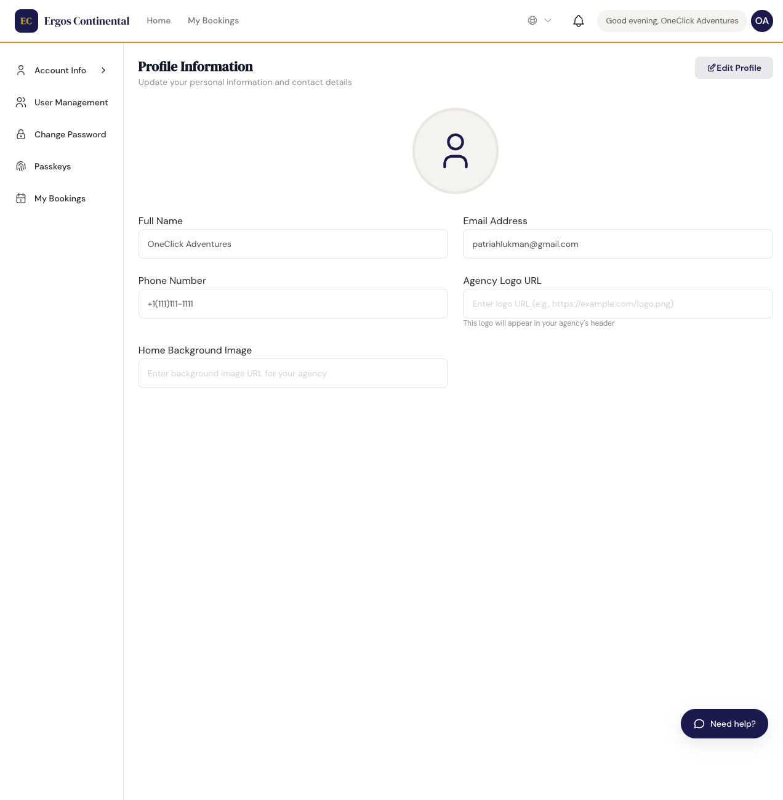
What you can edit yourself
Qué puede editar usted mismo
- Your display name, contact phone, and notification preferences.
- Your password — changing it requires entering the current password first.
- Your passkeys — register or revoke biometric login devices.
- Your agency's default markup percentage — enter as a whole-percent integer (e.g., 15 for 15%). No decimals. It is 0 by default (customer prices equal the Ergos sell price until you set one); the value is read from your profile and frozen onto each booking at the moment you book.
- The agency's language preference (English / Spanish) — affects every label across the app.
- Su nombre visible, teléfono de contacto y preferencias de notificación.
- Su contraseña — cambiarla requiere ingresar primero la contraseña actual.
- Sus passkeys — registrar o revocar dispositivos de inicio de sesión biométrico.
- El porcentaje de markup por defecto de su agencia — ingréselo como un número entero de porcentaje (ej., 15 para 15%). Sin decimales. Es 0 por defecto (el precio al cliente es igual al precio de venta de Ergos hasta que configure uno); el valor se lee de su perfil y se congela en cada reserva al momento de reservar.
- La preferencia de idioma de la agencia (Inglés / Español) — afecta cada etiqueta en toda la app.
What only Ergos can change (contact support)
Qué solo Ergos puede cambiar (contactar soporte)
- The legal name on your agency contract.
- Your rebate percentage — set in your master contract.
- Which GDS suppliers your agency has access to (most agencies have all four enabled by default).
- Per-hotel commission overrides for special partnerships.
- El nombre legal en el contrato de su agencia.
- Su porcentaje de rebate — fijado en su contrato maestro.
- A qué proveedores GDS tiene acceso su agencia (la mayoría tiene los cuatro habilitados por defecto).
- Ajustes de comisión por hotel para asociaciones especiales.
13. Common issues & troubleshooting
13. Problemas comunes y solución
I can't log in
No puedo ingresar
- Check the URL — is it your agency's tenant URL? Each agency has its own.
- Try the password reset link — typing errors in long passwords are common.
- If you registered a passkey on a device you no longer have, log in with your password instead, then revoke the lost passkey from the Passkeys page.
- If still stuck, ask your agency owner to verify your account is active.
- Revise la URL — ¿es la URL del tenant de su agencia? Cada agencia tiene la suya.
- Pruebe el link para restablecer la contraseña — los errores de tipeo en contraseñas largas son comunes.
- Si registró un passkey en un dispositivo que ya no tiene, ingrese con contraseña y después revoque el passkey perdido desde la página de Passkeys.
- Si sigue con problemas, pídale al dueño de la agencia que verifique que su cuenta esté activa.
A hotel I'm looking for doesn't appear in search results
Un hotel que estoy buscando no aparece en los resultados
- Check that your dates are not blocked by the property (some hotels close in low season).
- Try searching for the destination by city instead of by hotel name.
- Verify the GDS the hotel belongs to is one your agency has contracted (see your Account page).
- If the supplier is slow to respond (Restel and Roibos take longer), wait a few extra seconds before assuming no results.
- Revise que las fechas no estén bloqueadas por la propiedad (algunos hoteles cierran en temporada baja).
- Pruebe buscar el destino por ciudad en vez de por nombre del hotel.
- Verifique que el GDS al que pertenece el hotel sea uno que su agencia tiene contratado (vea su página de Cuenta).
- Si el proveedor responde lento (Restel y Roibos tardan más), espere unos segundos extra antes de asumir que no hay resultados.
A booking is stuck in Pending for more than 1 hour
Una reserva está en Pendiente por más de 1 hora
Open the booking detail and look at the status timeline. If the supplier hasn't responded, the booking will auto-cancel after 24 hours and the payment is auto-refunded. To force a re-check, contact Ergos support with the locator — they can ping the supplier directly.
Abra el detalle de la reserva y observe la línea de tiempo de estado. Si el proveedor no respondió, la reserva se cancela automáticamente después de 24 horas y el pago se reembolsa automáticamente. Para forzar una nueva verificación, contacte al soporte de Ergos con el locator — pueden consultar al proveedor directamente.
The voucher / invoice PDF won't download
El PDF del voucher / factura no se descarga
It's almost always a popup blocker. Allow popups for the Ergos URL in your browser settings and try again. If you're on iOS Safari, the PDF opens in the same tab — use the share menu to save or email it.
Casi siempre es un bloqueador de popups. Permita los popups para la URL de Ergos en la configuración de su navegador y pruebe de nuevo. Si está en Safari iOS, el PDF se abre en la misma pestaña — use el menú de compartir para guardarlo o enviarlo por correo.
Still stuck? Contact support
¿Sigue con problemas? Contacte al soporte
Email support@oneclickadventures.com with the booking locator (if applicable), a clear description, and a screenshot. Response time is typically within 2 hours during business hours (08:00–20:00 EST, Monday–Saturday).
Escriba a support@oneclickadventures.com con el locator de la reserva (si aplica), una descripción clara y una captura de pantalla. El tiempo de respuesta es típicamente de menos de 2 horas en horario laboral (08:00–20:00 EST, de lunes a sábado).